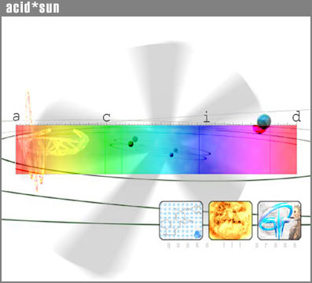

| 
Kage No Senshi: We've recently had our first scrim as a four man team in quite some time against a
new clan full of old friends, KnS. We came out victorious on both dm7 and dm6 and would like to thank KnS for the great
games.
as.hobart
18-June-00 10:43 PM
Voodoo3 Win2k: For those of you with voodoo cards and Win2k, these new
drivers might come in handy. I ripped them from a geeknews.com link and they seem to help my fps at least a little. Good luck!
as.hobart
15-June-00 11:15 AM
news : A lot of small events have happened lately and I wanted to take a little time to sum up the last
few days.
First of all, it is very exiting to see that recruiting is going so well. Every day it seems, new people drop in wanting to try-out for our beloved clan. It is great to meet so many new people and
very encouraging for me to see, that we seem to attract a large amount of gamers throughout the country, interested in taking a closer look at our "family".
I want to take the time as well, to congratulate Robert for being a full member of our group once again. Robert lost his .rec(ruit) tag a few days ago and is now as.fa||en. Robert, it is an honor
and pleasure to us all, to have you on board again!
Last night Evan ( as.agamemnon ) and I ( as.stere()type ) had some friendly 2 on 2 scrims against DH. All games were lost by a margin of less then 6 frags, and the last game even by only 1 frag
(39-40 on dm6). We enjoyed the games a great deal and are looking forward to setting up some 4 on 4 scrims against you guys soon. Gg's!
As a result of our recent and final change in name appearance, we have decided to edit our binds a little bit again. Everyone will change the colors of the * [ ] and | in the binds according to the
color of their "."in their name.
Dimitris (former acid*Tsakali) has decided not to join our ranks after our reformation. Dimitris was one of the "founding" members of the original clan and it saddens us to see him depart. However
we parted in friendship and therefore wish him the very best of luck. Take care and stay in contact =).
Another thing I feel I must mention is a new IRC script I stumbled upon last night. It's name is °ShowDowN v11 PrO° and it is by far the most powerful and complex script I have ever seen. So
for anyone that likes to be in total control, have every option you can imagine, be 100% safe from hacks etc. and have a gigantic variety of cool entertainment stuff, you _must_ get this script!
(Grant you will love it!) You can grab the file here: http://www.sci.fi/~showdown/ .
That's about it for now. Everything seems to be going extremely well. Keep up the good work everyone.
Viva la acid*!!!
as.stereotype
30-May-00 10:03 AM
5.24am : As you can see it's damn late and I am somewhat bored, as I refuse to sleep now, because I am so
tired that if I sleep now, I will never ever again wake up.
As a result of my boredom, I have nothing better to do, than try really hard to think of something worthwhile to post on the web. As you will soon notice that attempt failed.
But seriously, I wanted to take the time and sum up my memories and thoughts about our clan, as we still don't have a history section. (Grant? ... *hint* *hint* :) ).
It all began sometime beginning of this year I think. My best friend Andrew D. Mason (and let it be said now: Without him our clan would have never existed in this form.) asked me to start a clan
with him. We had been playing a great deal together at this time as we lived together in the same dorm and were laned, so naturally I said "Yeah, let's start a clan!". I then started recruiting on my
own with his permission, as he was a little on the asocial side and didn't like the idea of chatting with strangers on the internet.
Our first actual member was Nate (now [a|s]M4d_3w0k ] and was soon followed by our good buddy Dimitris. Good old Andrew decided he didn't want to be in a clan anymore and somehow - more by
coincidence - I was given the role of our clan leader.
Soon I met Grant ( [a|s]Grantastic ) online and got my ass kicked by him on dm17. Immediately I figured "hrmmm...I'll ask him if he wants to join"...I did...and he said yes :)
At that time our recruiting was really coming alive. We had 3 girls who joined us: Nicki=Desmodus (Shugashack ;), Madeline=Devilgrr and Juli=Tchn0. We dumped 2 of them and unfortunately Nicki
decided to part with us. In addition we had some other guys interested, like Tobad and some others who never really stuck around much.
And of course I dare not to forget our dear tank Evan
( [a|s]Agamemnon )...dunno when you actually came into play (I know you've been with us for a long time, but it escapes me at meanwhile 6.07am when it was you joined us :) )
At this point things were going really well. We were slowly becoming real buddies and our AIM chats remain classy even up to today.
At this time we had no clue what TP.net was and really didn't no shyte about the clan scene.
Soon we started to make a name for ourselves on some selected servers and recruited Todd (acid*lok), Aaron (acid*Chumpinator), Doug (acid*ENiGMA) and our dear Robert (now [a|s]fa||en.rec ].
With their help we finally had the team we needed to compete on the ladders and promptly entered the teamplay.net TDM ladder.
To make a long story short, we got crushed by DH, {DigA}, BB and Viper -Todd left, Aaron, Robert and Doug were hardly around, Nate went on modem, Dimitris had vanished long ago somewhere in the huge
pile of school-work, I was bound to leave for Europe being stuck on a modem an ocean away from my clan and so the only 2 players left were really Grant and Evan.
The future for us looked pretty dark, and in that momentum I decided to leave my own clan. I wanted to go to the top, looked at different clans, realized I was doing the "wrongest" thing possible
and decided after a silly debate about me wanting ops back in IRC, that I missed my friends and wanted to rejoin acid*sun. By that time Todd, Aaron and Doug were already gone more or less, Robert
wanted to retire a while from the clan scene (glad you didn't ;) ), Evan was looking at different clans with me and all of a sudden acid*sun was only Nate and Grant.
When I decided to come back, we all agreed that a LOT had to change. We had made too many mistakes, had recruited carelessly, had not been serious enough about code and ethics and actually had
forgotten to take pride and joy in our clan and the game we love so much: QuakeIIIArena.
After the 3 of us gave each other the virtual IRC hugs, we immediately asked Evan to join us again...of course he did :)
In addition we decided that Robert was too good of a friend and gamer to drop, and therefore asked him to join our ranks once again, this time as recruit to prove his dedication. (You'll be rid of
your tag soon my friend ;) ).
As all of us saw this whole phase of confusion as a rebirth of an even stronger acid*sun, we decided we needed to make some changes on the optical side as well to enhance and support this feeling of
change. We cleaned up our member-mess and created a new tag with new colors.
Due to our dear friends The Specialists, we realized how important code was. They reminded us that without code a clan was nothing.
We had some great moments I believe, but the best are yet to come. I hope that with dedication, fun and friendship, this clan will at some point belong to the top clans in Q3A TDM...in terms of
friendship we've already accomplished that.
6.47am
Stereotype
25-May-00 06:54 AM
New Recruit : Welcome [a*s]Raildog.rec to our clan. John is a really great guy, so give him a warm
acid*sun welcoming!
Viva la acid*!
Stereotype
24-May-00 07:30 PM
Teamplay.net servers : I know this does not look like much news, but I wanted to remind you of something
you might already know. As we are low on members, we can't really play much TDM, therefore I think you should all spend more time playing TDM on public servers to refine your skills and practice your
binds. The problem is that on most public servers there are only players not interested in team communication and usually they suck as well and to tip it off one is most often stuck in 6 on 5 team
games instead of even teams with a max of 4 players on each team. In addition they run the wrong maps. In conclusion they are good for some fun but are not really any good when it comes to serious
practice.
Therefore I want to tell you more about the teamplay.net servers. We played one or 2 clan matches on them, but there is much more to them than meets the eye.
They are a gathering point for the better clan players to practice. They are like 1337 public servers to log onto and play. You will most often find unbelievable players there, frequently under
aliases. You should check in on a REGULAR basis to see what's up. D|S, DsL, cK, stx and other good players of good clans play there all the time. In other words, that is THE place to be if you are
looking for some great TDM games with players that can show you some awesome strats. Just the other day I played on a team with cK.Spook and a guy from stx.
Don't be shy, just join in, but beware: If the teams are even and the game has been going and you join in you will be seriously fucked! They never play uneven and never more than 4 on 4. It's not a
public server and they play after different rules.
But if after a game you are next in line, then join in for the warm-up and claim your spot in the next match! Don't be shy, it's great fun and very rewarding as they use binds guard areas and do all
the stuff that clans work on to become better teams, so go, learn and practice those TDM skills and binds!
Have fun.
216.32.91.170:27961
216.32.91.170:27963
Passwords you will find in our private channel #acid*private on IRC. (It would be inappropriate posting them on the web, even if they are already widely known.)
Stereotype
19-May-00 03:23 PM
Binds: : I have put together a comprehensive text on binds. It contains a full set of all binds we will be
using and in addition some suggestions to structuring your binds on the keyboard. The binds are already fully color coded and written out in a form suited to copy and past into your cfg. i.e.
/bind key say_team "^3* ^4content ^3*"
The only thing left to do is replace "key" with an actual key of your choice and get rif of the " / " in front of the command, as that is not appropriate for the cfg.
In case anyone is interested I have also included the way I structure my binds on the keyboard.
Please put the binds in your cfg. as soon as possible and familiarize yourself with them.
Stereotype
18-May-00 08:32 PM
Wecome home! : Wecome back Robert to acid*sun! Robert has been a member of the former acid*sun as well and
has decided to join our ranks once again as recruit. His new nick will be [a*s]fa||en`rec for now, and after a few weeks we hope he will once again decide to become a full member of [a*s] and rid
himself of the `rec-tag.
As for now he is the first recruit. We have some other quality players interested in us, but as for now no specific answers from them in regards to our offers.
I hope more people will try out and see what makes acid*sun such a special place to be.
Stereotype
18-May-00 08:03 PM
the specialists : Before it's too late to be noticable, I'd like to use this forum to give thanks to a
great clan, The Specialists for all of thier support during acid*sun's brief unstable period. Thanks to their help and advice during that period,
especially the counsel of [TS]Riffington and [TS]Hollow_Man, acid*sun is again a growing clan. The new and imporved acid*sun is heavily based on what we've seen and liked about how The Specialists
run their organization. Nate and I will never forget them, and I look forward to joining them at QuakeCon in August. In summation, if you see a [TS] on a players name in q3a, you've just met a
wonderfully nice guy - but watch out, he'll frag the shit out of you if you aren't careful ;)
grantastic
17-May-00 08:39 PM
acid* recruiting !! : As you can see the all new acid*sun is recruiting again and still have open spots to
fill.
What we can offer you:
- a great time.
- a more rewarding gaming experience.
- a frame of code and ethics that we take very seriously and are proud of.
- a fair amount of experience in the q3 clan scene.
- a firm, friendly and skilled base of players
. - mature decision making by democratic structure rather than a clan lead as a dictatorship by a 14 year old (everyone 14 years of age: no offence please).
- a good network of contacts to other clans to organize scrimmages on a regular basis.
- a history that guarantees that we will stick together and not break up. (thx Grant and Nate for showing your friendship once again).
- some top notch players who took a likening in us, and ;occasionally even take the time to share their experience and wisdom with us. (thx nB.Gator, tk-Canvas and tk-Silvershark for your patience
with me)
- a frame of code and ethics that we take very seriously and are proud of.
- an environment free of these silly military associations found in some clans (again: no offense pleaseeven if you are 14 years of age and militaristic).
- and finally and most important: friendship and comradeship.
What you need to join us:
- a good attitude and friendliness.
- maturity.
- dedication.
- a love of quake3arena.
- time.
- advanced skill level (don't have to be 1337, but pretty good).
- more than a dial-up modem.
- an interest in TDM (Team Death Match).
- IRC (in which you will have to spend a good deal of time per week) if socializing is not your thing, then you are not what we are looking for.
If you are interested you can contact acid*sun in IRC (server: ky.enterthegame.com:6667 channel: #acid*sun), e-mail: m-roberts4@nwu.edu, AOL instant messenger: markrokosmos, gstavelyg, ocia42 or
r3verand.
As you can see, our web page is up, but still under heavy construction. Nonetheless, feel free to explore what we have here - you will certainly get a feel for what we went through during the last
days and weeks.
acid*sun is back in the community again!!! If you feel that this might be something you want to be a part of, than get in contact with us via the media posted above.
Viva la acid* !!!
Stereo
16-May-00 09:50 AM
decisions decisions : What to do, what to do... hmmmm... It seems like Nate, Dimi and I are the only
remaining members of acid*sun. Stereotype has left and pulled most of the other members with him. Unfortunate? Perhaps not.
We have decided to rebuild the clan instead of joining TS, although their generous offers to join were and are rather enticing. As of Saturday, I have admin control of the IRC channel and we are
officially *recruiting*.
There are a number of things on which one can base a clan. Some choose skill. Some choose personality. Most choose a mixture of two.
acid*sun - the *new* acid*sun - will be built up on personality. Most anyone can aquire 1337 5k1llz but once an asshole, always an asshole, and we won't have any of that.
grantastic
15-May-00 12:23 PM
sunday! sunday! sunday! : Before all of this (read the previous to posts) acid*sun had scheduled a
match on sunday night in honor of Mother's Day. Ok.. maybe it's not in honor of Mother's Day, but that's what you can all tell your Mothers when you stay home for the game so that we dont' have to
forefeit. The match is against our good friends, The Specialists, and I know that they have been looking forward to this. One last acid*sun game? With RogerWilco? It'll make you remember the good
times and why you are now leaving/staying (maybe). As usual - IRC is the best way to get a hold of any involved players and the match is at 9:00 PM Eastern.
The Specialists
grantastic
12-May-00 10:59 AM
the future : What does the future hold for acid*sun? As of last night, we are practically disolved.
Some are talking to the TheSpecialists, some to SMS, some are screaming at their local phone company for not offering high bandwith. I have a few ideas of my own that I would like to put on the table
for the existing acid*sun members. We've all given this a lot of thought and we need to discuss things in IRC. If you no longer wish to be involved, that's fine. But please idle irc.enterthegame.com
until we have all made out decissions - don't leave anyone hanging. Thank you!
grantastic
12-May-00 10:52 AM
important news :-/ : Well, I know this might come as a shock to some of you, but I will leave our
clan acid*sun. As the summer is comming closer, I have realized that too many members are going to be inactive. I myself will be gone for the summer and will be without game, connection and time to
show up and play. I will try to try out for some clans after the summer and would encourage everyone to do the sma e now. Everyone of you has the skills and character to be an important member of any
clan out there, so don't be frustrated, but move on. If anyone (nate?) wants to run acid*sun and rebuild and start new recruiting after the summer than that would make me very happy, but I fear that
I will not be a part of it no matter what happens. For me this is a very tough decision to make, as you are my friends and my team mates...I hate abandoning you. We will always remain good friends
and keep up our battles :) As I said, what everyone of you does is up to you...but I would love to see you compete further in the q3 community. Join other clans or keep acid*sun alive...don't quit.
Maybe some of you should considder asking our good friends [TS] to give you a home. Some of you could still stick together that way, and who knows: [TS] might be a good place to be. I for myself will
see what I can come up with for myself by talking to other guys we've meet during our q3 gaming experience...
Guys, you are my buddies, please understand that I have to do this.
I'll be around as much as allways, just without the prefix acid*...although I will always keep our team close to my heart :)
I'll be around until the 9th of June and I;m sure we will have a lot of opportunities to talk.
Cya l8r buddies!
Mark V. Roberts
Stereotype
11-May-00 10:44 PM
acid*survival : Robert and Mark have signed up for
Teamplay.net's 2on2 tournament. Everyone should wish them luck and we all hope they go far representing the clan!
grantastic
11-May-00 10:54 AM
Litestep : I figured I ought to post the acid*sun Litestep
theme I've created and have been using for the past few months. If you like this screen shot let me know and I will gladly assist any "new to Litestep" users in installing
it. There is an accompanying windowblinds theme, also homemade that can be seen in the screenshot. It is highly recommended that if you have little or no litestep experience that you not try to
install it yourself.
grantastic
11-May-00 10:43 AM
Mission Pack? : PlanetQuake has a lot of info on the forthcoming quake expansion pack. New weapons,
models, powerups and maps are all detailed HERE. Some of the stuff looks interesting, some doesn't, and I better not have to
pay for it!
grantastic
11-May-00 10:22 AM
Flashing : Robert and I have created small Flash animations and I figured, even if we never finnish
them for the site, they should be posted. Check Robert's profesional looking one here. This is my first ever saved file with the software, so go
easy on me.
grantastic
11-May-00 09:58 AM
|
{kind=link}
{kind=link}
{kind=link}